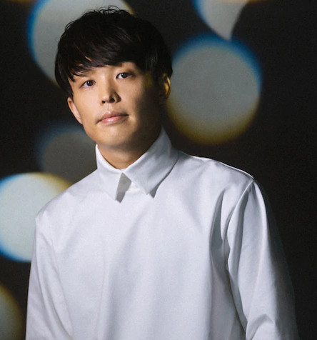
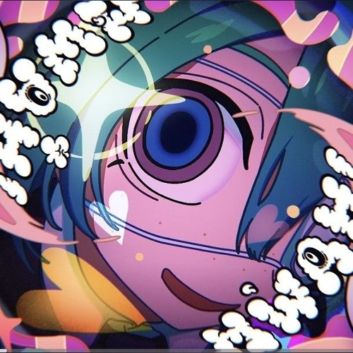
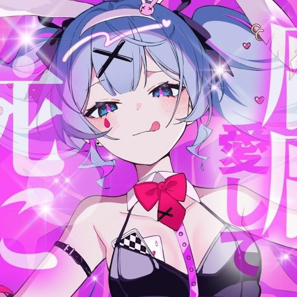
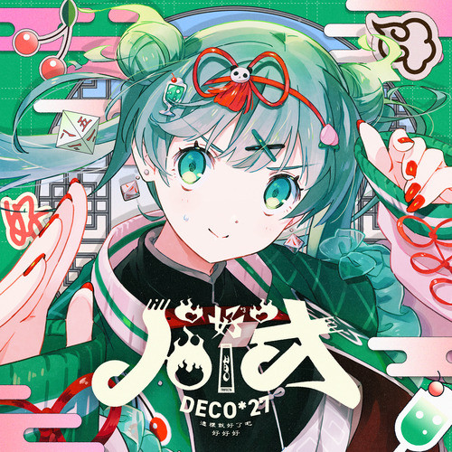
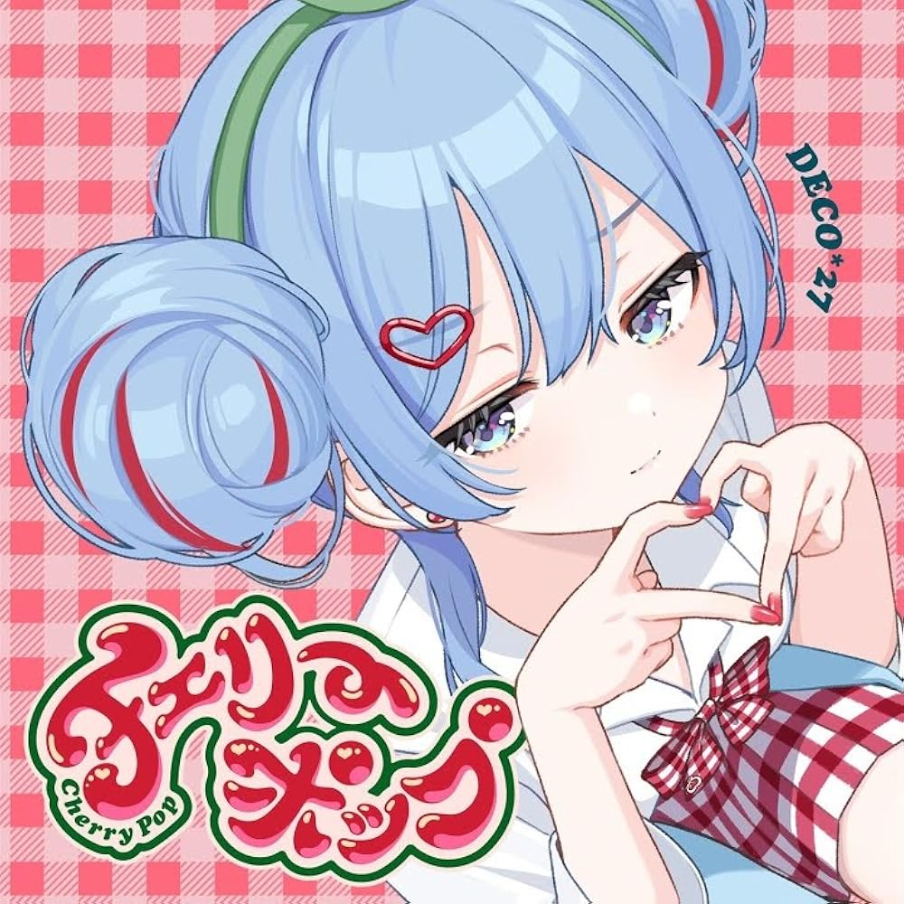
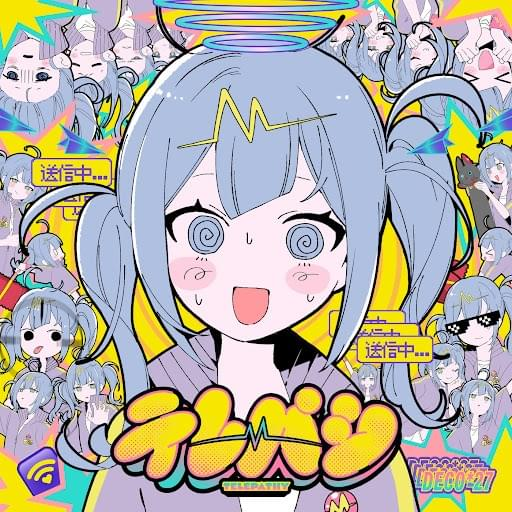
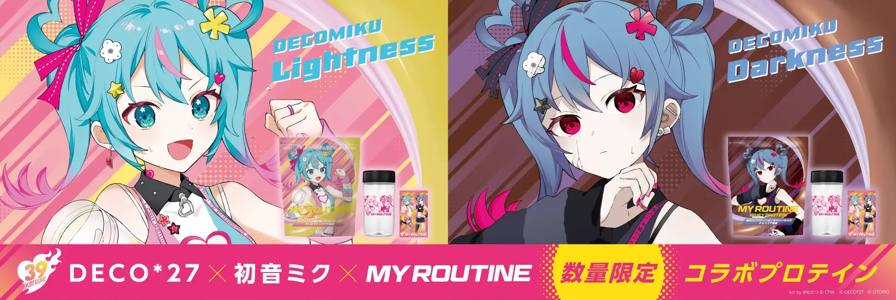

| Real Name | Kosuke Terayama |
|---|---|
| Origin | Japan |
| Active Since | |
| Genres | J-Pop, Rock, Electronic, VOC |
| Known For | Hatsune Miku collaborations, Ghost Rule, Ai Kotoba |
| Platform | Nico Nico Douga, Spotify, YouTube |
DECO*27 (pronounced Deco Nina) is a Japanese music producer, songwriter, and composer known for his emotionally-charged VOC music. Since debuting in , he has become one of the most celebrated creators in the VOC community, especially for his groundbreaking work with Hatsune Miku. His songs blend catchy melodies with emotional storytelling, making him a defining figure in modern VOC culture.
Over more than a decade, DECO*27 has amassed hundreds of millions of plays across platforms, earned spots on mainstream music charts in Japan, and had his songs performed live at major concerts including the iconic Miku Expo world tour. He is widely regarded as one of the architects of the modern VOC sound.
Early Career
DECO*27 began producing music in the late 2000s, experimenting with rock, electronic, and pop sounds. He gained rapid attention on Nico Nico Douga, where his unique lyric-writing style and energetic compositions stood out from other producers. His early works quickly established him as a rising star in the VOC community.
His very first upload reached over 100,000 views almost immediately — an extraordinary milestone at the time. This kind of instant recognition was rare and signalled that DECO*27 was not just another hobbyist uploader, but someone with genuine artistic direction. Early fans describe his debut tracks as surprisingly polished and emotionally resonant compared to the rough, experimental uploads typical of the era.
↑ Back to TopMusic Style & Themes
His style has been described as a fusion of rock and pop, with heavy electronic underpinnings. What separates DECO*27 from many of his peers is his approach to vocal tuning — rather than using Hatsune Miku's voice in a robotic or novelty way, he sculpts it to feel genuinely expressive, almost conversational.
Lyrically, his songs are dense and fast-paced, often featuring internal monologues, second-person address, and metaphors drawn from everyday digital life — mirrors, screens, signals, and ghosts. Recurring themes across his catalogue include:
- Unrequited love — longing from a distance, unspoken feelings
- Identity — the gap between how we present ourselves and who we really are
- Digital intimacy — connection and disconnection through technology
- Memory and loss — nostalgia, impermanence, and letting go
His production style evolved significantly from his early rock-leaning tracks to more layered, cinematic arrangements in later albums like MANNEQUIN and TRANSFORM, while always retaining the emotional core that made his earliest work so striking.
Breakthrough & Rise in Popularity
DECO*27's rise came through a mix of relatable themes — love, relationships, insecurity, and personal emotions — expressed through a synthetic voice in a surprisingly human way. Songs like Ai Kotoba and Yowamushi Mont Blanc resonated deeply with a generation of young listeners who found in Vocaloid music an emotional honesty rarely seen in mainstream J-Pop.
He became known for:
- Fast-paced, rhythmic lyrics
- Clear, emotional vocal tuning
- Poetic storytelling
- High-quality production
His songs consistently broke millions of views, and he became internationally recognized for pushing VOC music into a new era. By the mid-2010s, DECO*27 had transitioned from a beloved internet creator to a fully professional artist, signing with major labels and releasing physical albums that charted across Japan.
↑ Back to Top"I want to make music that makes people feel something real, even through a synthetic voice."
Hatsune Miku

DECO*27 is best known for his work with Hatsune Miku, shaping her modern musical identity. His tuning makes Miku's voice feel expressive, emotional, and almost human. Many fans credit him with creating some of the most iconic Miku songs ever made.
Hatsune Miku is a VOC software voicebank developed by Crypton Future Media. Unlike a real singer, she is a tool — her voice, emotions, and personality are entirely shaped by the producer using her. DECO*27's particular genius lies in how humanely he wields that tool. In his hands, Miku does not sound like a computer; she sounds like someone genuinely hurting, hoping, or celebrating.
His Miku tracks often focus on internal struggles, relationships, and personal reflections, giving listeners a strong emotional connection. Songs like HAO, Hibana, Ghost Rule have become staples of Miku live concerts worldwide, projected onto holographic screens in front of thousands of fans.
↑ Back to TopMajor Songs and Standout Works
Here are some of DECO*27's most iconic tracks:
- Ghost Rule ‐ One of the most recognized
VOC songs ever
Listen on Youtube
- Ai Kotoba series ‐ Messages of love and
gratitude
Listen on Youtube
- Android Girl ‐ Linking "love" with
Androids and AI humanoids.
Listen on Youtube
- Otome Dissection ‐ Rhythmic, sharp,
extremely popular
Listen on Youtube
These songs are widely used in concerts, rhythm games, and covers across platforms worldwide.
↑ Back to TopAlbums & Projects
DECO*27 has released multiple albums and EPs featuring Hatsune Miku and other VOC voices. Notable works include:
↑ Back to TopCollaborations
While DECO*27 is primarily known as a solo producer, he has a strong history of creative collaborations with other artists in and beyond the VOC world. These partnerships have broadened his sound and introduced his music to entirely new audiences.
With Other Vocaloid Producers
His early collaboration as DEKOUS*UK with kous and sasakure.UK is a fan favourite example of producer synergy. He has also worked closely with illustrators and animators who bring visual identities to his songs, treating music videos as an extension of the song itself rather than an afterthought.
With Human Vocalists
In recent years, DECO*27 has released tracks featuring human singers alongside or instead of Hatsune Miku. These releases show his versatility as a songwriter and producer — the same emotional lyricism that defines his VOC work translates naturally to real voices. Collaborations with vocalists such as Amatsuki and Kogeinu demonstrated that his appeal was never exclusively tied to the synthetic voice.
With the Anime & Game Industry
DECO*27 has contributed songs to anime soundtracks and rhythm games, most notably Hatsune Miku: Project DIVA and Taiko no Tatsujin. These placements dramatically expanded his reach, introducing his work to players who might never have browsed Nico Nico Douga.
↑ Back to TopDiscography Timeline
The table below gives a broad overview of DECO*27's major releases over the years, showing how his output has evolved from early fan uploads to full commercial album cycles.
| Year | Release | Type | Notable Tracks |
|---|---|---|---|
| Debut uploads | Digital singles | Yowamushi Mont Blanc | |
| Ai Kotoba | Single | Ai Kotoba | |
| Conti New | Album | Hibikase, Ai Kotoba II | |
| Ghosts | Album | Ghost Rule, Otome Dissection | |
| MANNEQUIN | Album | Rabbit Hole, Cinderella | |
| Undead Alice | Album | Marshmallow, Bless Your Breath | |
| Android Girl | Album | Android Girl, Telepathy | |
| TRANSFORM | Album | Monitoring, Cherry Pop |
↑ Back to Top
Fun Facts & Trivia
Beyond the music, there are some interesting details about DECO*27 that even longtime fans might not know:
- The name "27" — The number 27 in his name is read as Nina in Japanese wordplay (二 = ni = 2, 七 = na = 7 → Nina), making DECO*27 literally "Deco Nina."
- 100k views overnight — His very first VOC upload reached 100,000 views almost immediately, which was virtually unheard of for a new, unknown producer at the time.
- Ghost Rule's longevity — Ghost Rule has remained one of the top-streamed Vocaloid songs on Spotify for years after its release, an unusual feat in a genre where novelty drives most traffic.
- Miku Expo performer — Several of his songs have been performed at Hatsune Miku's holographic live concerts around the world, meaning his music has technically been "performed live" on multiple continents.
- Rhythm game royalty — His tracks appear in over a dozen rhythm games, making him one of the most-featured producers in the gaming side of VOC culture.
- Producer × illustrator partnerships — He regularly works with specific illustrators to craft a visual identity per album, making each release feel like a cohesive artistic world rather than just a collection of songs.
Legacy & Influence
It is difficult to overstate DECO*27's influence on the broader VOC community and on Japanese internet music culture as a whole. He was among the first producers to prove that a VOC artist could achieve mainstream commercial success without abandoning the raw emotional style that made them popular online in the first place.
A generation of newer producers — many of whom grew up listening to Ai Kotoba and Ghost Rule on loop — cite DECO*27 as a direct inspiration. His approach to vocal tuning has become something of a benchmark: when fans describe a VOC song as having an "expressive" or "human-sounding" Miku, they are often comparing it, consciously or not, to the standard he set.
Beyond VOC, his success helped legitimise the idea that music made entirely by a single bedroom producer — with no band, no traditional label, and a synthetic vocalist — could be serious art. In that sense, his legacy extends beyond the genre and into the broader story of how the internet changed music-making forever.
↑ Back to TopGallery





Conclusion
DECO*27 stands as a pioneer of modern VOC music. With his signature emotional lyrics, innovative production, and iconic collaborations with Hatsune Miku, he has built a legacy that continues to influence music creators everywhere. His work remains a core part of VOC culture, making him one of the genre's greatest and most respected producers.
Whether you discovered him through Ghost Rule in a rhythm game, stumbled onto Ai Kotoba on a late-night playlist, or followed him from his earliest Nico Nico Douga days — his music has a way of staying with you. That staying power is the truest measure of his legacy.
↑ Back to Top